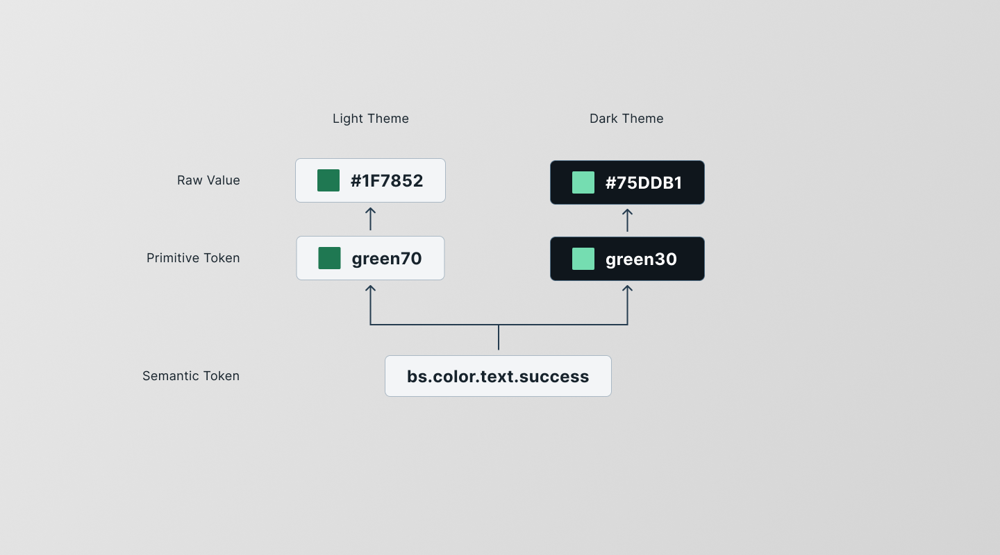
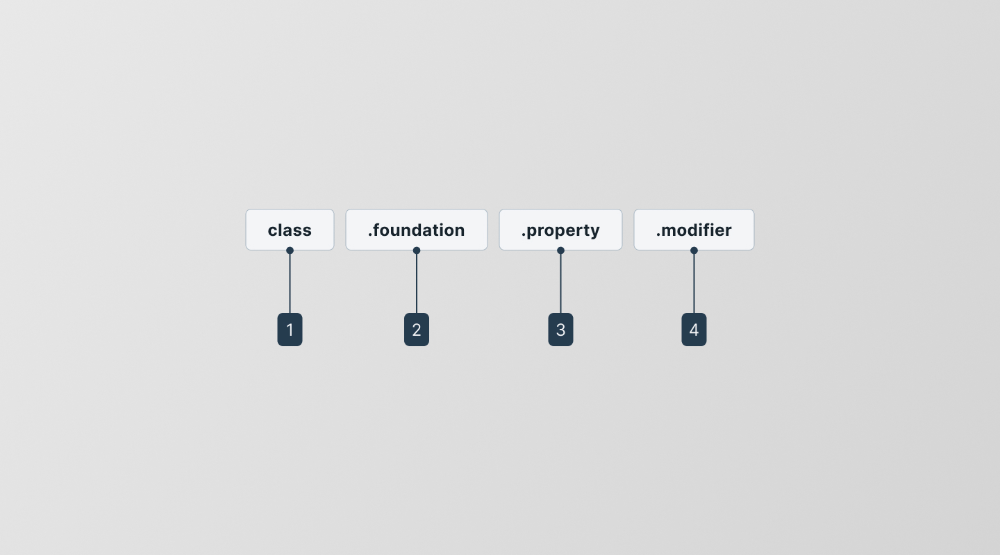
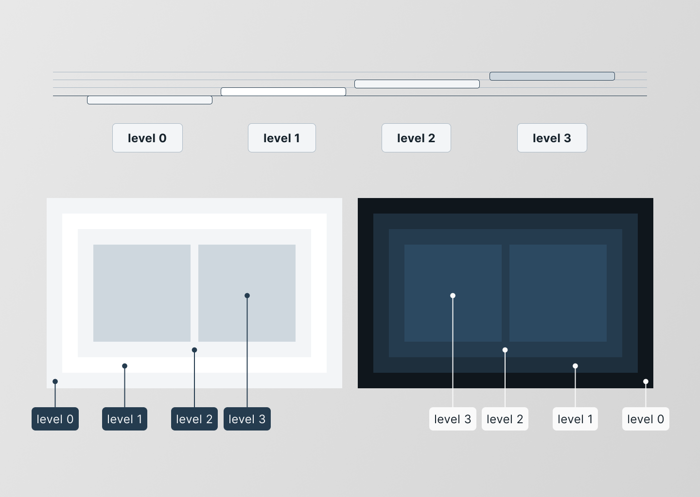
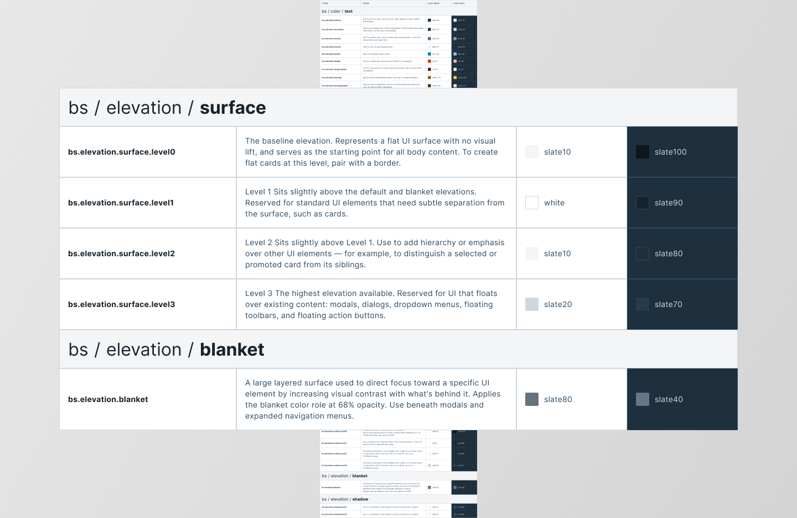
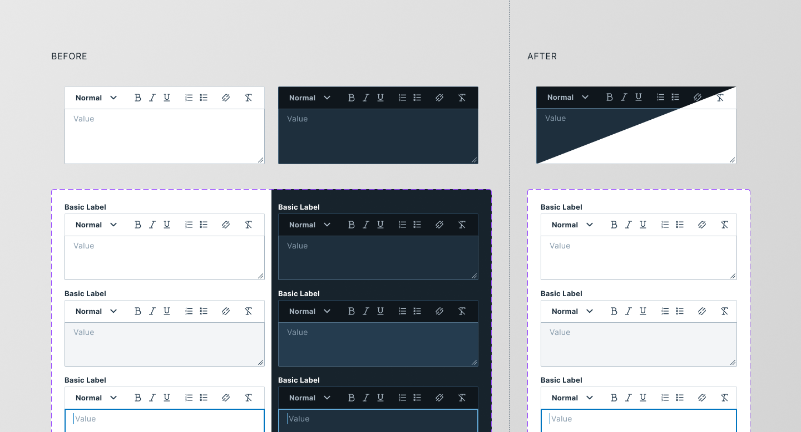

Bitsight's design and engineering teams were out of sync. Colors were hardcoded, dark mode required double the work, and every theme change was a manual effort. I led the adoption of a semantic token system that changed all of that.
A Figma announcement, a rebrand, and a window of opportunity
In mid-2023, Figma announced Variables at their annual Config event. I watched the presentation and felt something click. This wasn't just a new feature. It was a real answer to a problem I had been sitting with for a long time: how do you make visual decisions consistent across a growing product without relying on manual discipline?
The timing couldn't have been better. Bitsight was undergoing a company-wide rebrand. Every product interface would need to reflect new visual standards, across multiple platforms, simultaneously. Without a scalable solution, that rebrand risked becoming a slow, error-prone process that would stretch for months.
I saw the rebrand as a forcing function, not a burden. If we were going to update everything anyway, this was the moment to build the system underneath it properly, so the next rebrand, or the next product acquisition, wouldn't cost us the same amount of effort all over again.
I proposed starting with a proof of concept. The Questionnaire feature, which I was already leading as a designer, became the first real test ground. It spanned both the VRM reviewer experience I owned and the TMH vendor experience, which I understood well from my original background on ThirdPartyTrust, making it a good stress test for a token system that would need to hold up across teams. The POC was successful enough that I got the green light to bring it to the design system properly, and from there tokens rolled out across all of Bitsight's products, well beyond just VRM and TMH.
Replacing wheels on a moving train
The product suite was growing through acquisitions and new features. But our visual foundation wasn't growing with it. It was fracturing. Most colors were defined as Figma styles, which sounds organized, but styles are still hardcoded values with a name on them. Changing one meant hunting it down in every component that used it. Spacing decisions were made locally. A "refresh" request from leadership could ripple into weeks of manual updates across dozens of screens.
The challenge wasn't creating a consistent UI once. It was maintaining consistency while everything around it kept changing.
Products were added and acquired regularly. Legacy interfaces couldn't be replaced overnight. Visual updates were often driven by perception: "make it feel more modern." Changes needed to scale across many surfaces at once. We needed a system that could absorb change, not resist it.
My goal became this: make the visual direction testable without rebuilding the UI. We needed to change themes, not components. We needed updates to cascade instead of rippling chaotically. We needed consistency to be the default outcome, not the result of a manual review cycle.
Learning from what already existed
Before designing anything, I audited our current state. I mapped which values were hardcoded, which were shared, and where inconsistencies were most painful. The answer: everywhere colors touched components, which was everywhere.
I also studied three mature design systems as reference points:
Their token naming structure, foundation.property.modifier, became the backbone of our semantic layer. It gave us a consistent, readable pattern that any designer or engineer could follow without a reference doc.
Strong engineering integration. Their contextual token approach (tokens scoped to specific UI surfaces) influenced how we thought about namespacing contexts like nav or domain-specific scales like riskVector. That thinking shaped the class segment of our naming convention.
Deep token hierarchy, well-structured semantic layer. Too large in nomenclature for our scale, but useful as a reference for how far a token system can go when the product demands it.
All three were deeply considered and well-designed. But their scale and nomenclature were overkill for Bitsight's context. When I tried mapping their structures directly onto our products, the cost of adapting them outweighed the benefit of adopting them. I had to let that go, but I kept what was useful from each and left the rest behind.
Key insight: adopt ideas, not structures. Mature systems offer insight into how to think about tokens, not blueprints to copy. Fitting your environment saves more time than modeling someone else's.
The token architecture

A semantic token references a primitive. The primitive holds the raw value, never consumed directly by components.
The system is built on two layers: Primitive tokens that hold raw values with no opinion, and Semantic tokens that carry meaning, context, and purpose. Every semantic token follows a consistent naming convention, and that convention became the real foundation of the system.
Raw values with no interpretation. These tokens name a value but don't assign it any meaning or context. They're the foundation everything else references, never consumed directly by components.
Tokens with purpose and context. Named using a four-part convention: each segment answers a specific question. See the full breakdown below.
The naming convention:
A design token's name describes how it should be used, and each part communicates one piece of its usage. Every semantic token follows the same four-part structure, making tokens predictable. Any designer or engineer could infer what a token did just by reading its name.

The four-part naming convention: class · foundation · property · modifier. Each segment answers one question about how the token should be used.
Groups tokens that belong to a specific UI context or product concept. Class makes it clear where a token lives: whether that's the default design system, a navigation surface, or a domain-specific scale like risk ratings.
The type of visual design attribute or foundational style the token controls, such as color, elevation, or space. It answers what kind of style this token is about.
The UI element the token is applied to, such as a border, background, shadow, or other property. It answers what gets styled.
Additional details about the token's purpose: its color role, emphasis level, or interaction state. Not every token has a modifier. For example, color.text is our default body text color, no modifier needed.
Token class: the namespace that earns its place
The class segment is the first part of every semantic token name. It defines the namespace: a grouping that signals which UI context or domain the token belongs to. Not every context needs its own class. We only created one when a group of tokens was genuinely different enough that sharing a namespace with the default system would create confusion or conflict.
The baseline namespace for all general-purpose design system tokens. Everything that doesn't belong to a specific context lives here: typography, spacing, core UI colors. Example: bs.color.text.primary.
Domain-specific color systems for Bitsight's cybersecurity grades, risk scores, and security findings. These values have no equivalent in general-purpose tokens. They carry product-specific meaning that would be lost inside the bs namespace. Each gets its own class so the intent is explicit at a glance. Example: riskVector.color.background.gradeA.
Navigation elements don't switch between light and dark mode. They stay fixed regardless of the active theme. Isolating them in their own class makes that behavior clear and prevents accidental overrides. Example: nav.color.background.logo.
Switching between token classes in Figma: each namespace resolves to its own set of values without touching the components.
riskVector... and the value is right there.
The class segment was the key decision. Rather than trying to make one universal token set cover everything, we accepted that some contexts, like our cybersecurity rating scales, were genuinely different and deserved their own namespace. Specificity where it earns its place. Defaults everywhere else.
Sizing tokens: changing personality without changing components
One of the most satisfying demos I ran for the team was showing what sizing tokens could do. Swap radius values, adjust density, change component height, and the entire product shifts its personality. Compact and sharp vs. spacious and soft. No component was rebuilt. Only the tokens changed.
Swapping radius and density tokens shifts the product's visual personality. No components were rebuilt.
Documenting what never existed before
Before the token system, elevation and surface had no documentation at all. Colors and sizes were inconsistent enough to cause pain, but at least they existed somewhere. Elevation was just a judgment call made component by component, with no shared reference, no rules, and no way to enforce consistency.
Defining elevation tokens forced something valuable: it made us stop and actually decide what the system should be. You can't name something you haven't defined. The token work became the documentation work.
Tokens as forcing function. We didn't set out to design an elevation system. We set out to name one. But naming required decisions, decisions required alignment, and alignment produced something we'd never had: a shared, documented model for how surfaces stack in our UI.
The elevation token set
The final system uses five tokens. Four surface levels cover the full range of depth in our UI. One blanket token handles the overlay state used by dialogs, drawers, and modals.

Four surface levels cover the full range of depth in the UI.
The blanket token handles the overlay state: dialogs, drawers, and modals.

The complete elevation token set: name, value, and intended usage for each level.
Having these tokens in place means that any new component that introduces depth doesn't have to invent its own answer. It picks a level. The system does the rest.
Design and engineering don't always want the same thing
One of the most honest parts of this project was navigating the gap between what design needed and what engineering wanted. These aren't wrong goals. They're just pulling in different directions.
A small number of changes propagating safely through many tokens. Scale changes everything: a token system that works at 50 tokens breaks at 500. If maintaining it became manual labor, the system had already failed.
Specificity. Tokens tied tightly to components. Clear, explicit control over each UI surface. That approach makes behavior predictable, but makes large changes harder and multiplies maintenance cost.
That tension shaped every decision: naming conventions, how much abstraction each layer was allowed to have, when to add a contextual token vs. push back and use semantic ones. It still comes up in conversations today, and I think that's healthy. The system shouldn't belong to only one side.
Consistency as the default, not the exception
The token system shipped progressively, starting with color tokens, then sizing and typography. At launch it covered 160+ primitive variables and 100+ semantic tokens. As it rolled out, the effect was visible immediately: updating a primitive value cascaded automatically to every semantic token that referenced it, across the whole product.
What used to take days (designing two versions of every component for light and dark mode, hunting for the right hex value, manually keeping everything in sync) was reduced to minutes. Three modes supported out of the box: light, dark, and color blind. No redesign. No duplication. Just a token switch.
Before tokens: two components, one purpose
Before the token system, supporting light and dark modes meant designing two separate versions of every component. Two sets of color values, two frames in Figma, double the maintenance overhead. When a color changed, it changed in two places, or inconsistently, because someone missed one.
After tokens, that duplication was gone. Components referenced semantic tokens. Switching modes meant switching the token set, not rebuilding the component. One source of truth.

Before tokens: two separate component versions for light and dark. After: one component, one token switch.
Color blind mode: a new use for the token system
One of the most significant pain points in our product was the scale color system. Bitsight uses color-coded grades and risk vectors extensively, and for color blind users, the default palette was inaccessible. Distinguishing a "low" from a "medium" risk level by color alone was a real problem.
Because the token system separated visual values from their semantic meaning, adding a color blind mode became a tractable problem. We defined an alternative set of primitive tokens (accessible color combinations that preserved meaning) and mapped them to the same semantic tokens. Switching to the color blind mode required no changes to components. Only the tokens changed.

The color blind mode uses an alternative primitive set: same semantic tokens, accessible color combinations.
This was a direct result of the token architecture. If colors had been hardcoded in components, adding an accessible mode would have required touching every component that used those colors. Tokens made it a configuration change, not a redesign.
The users were my teammates
This project stands apart from others in my career, not because of its technical scope, but because of who benefited from it first. The users of this system were the people sitting next to me. My teammates. Myself.
I got to see the reactions in real time. In weekly syncs. In Figma comments. There's something different about designing a tool that your colleagues use every day, and then watching it make their work easier, or seeing their face light up the first time they switch a mode and the whole interface updates in one click.
That feedback loop (live, immediate, personal) gave this project a kind of satisfaction that user research can't fully replicate.
The result is not a finished system. It's a controllable one. Components continue to be added and evolved. But now there are building blocks in place to make scalable changes without structural rewrites.
What I'd tell myself at the start
Design for change, not perfection. The system that survives is the one that absorbs new themes, products, and opinions without structural rewrites. Every layer should exist for one reason: to reduce future edits. If it doesn't lower change cost, it doesn't belong, no matter how clever it sounds.
Specificity has a real cost. Granular control is valuable, but unchecked it multiplies tokens and slows global updates. Design wants propagation; engineering wants explicit control. Holding that line (and keeping both sides honest) was one of the hardest parts of the job.
Study mature systems, but don't copy them. Carbon, Material, and Atlassian gave me a vocabulary to think with. And get engineering aligned before the naming is done, not after. Some of the hardest conversations happened because I had already committed to structures before they weighed in. Earlier collaboration would have saved real rework.